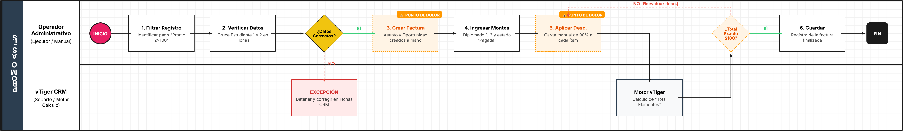
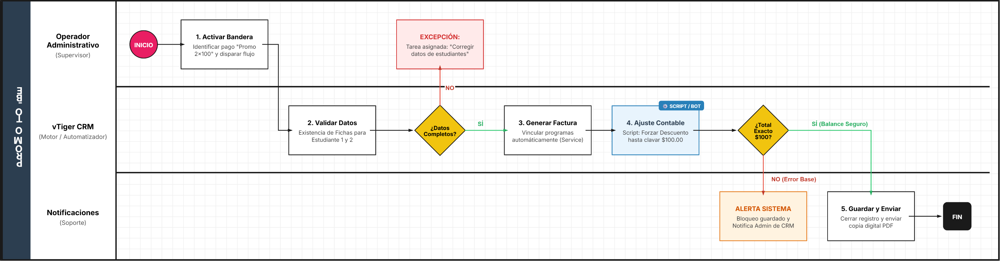

3.AS-IS (FACTURAS POR PROMOCIONES) TO-BE
1. Identificación y Alcance del Proceso
Esta sección define los límites del proceso de facturación promocional dentro del ecosistema CRM de la organización.
Campo | Descripción | Contenido |
|---|---|---|
Nombre del Proceso | Gestión de Facturación de Promociones Múltiples | Facturación de paquetes promocionales (Ej. Promo 2x100). |
Objetivo del Proceso | Garantizar la correcta emisión de facturas para promociones. | Facturar paquetes donde un pago cubre a dos estudiantes o diplomados, asegurando el balance contable mediante ajustes manuales. |
Punto de Inicio | Identificación del pago promocional. | El proceso inicia al filtrar en Payment Record por el concepto "Promo 2x100". |
Punto de Fin | Registro y guardado de la factura. | La factura es guardada con un total final exacto de $100.00. |
Documento Fuente | Manual Técnico de Procedimientos. | MANUAL 3: Gestión y Creación de Facturas por Promociones. |
2. Actores Involucrados (Lanes)
Se identifican los roles y sistemas que interactúan en el flujo.
Actor (Lane) | Rol en el Proceso | Responsabilidades Clave |
|---|---|---|
Operador Administrativo | Ejecutor | Filtrar pagos, verificar datos de estudiantes, crear facturas y aplicar descuentos manuales. |
vTiger CRM | Sistema de Soporte | Repositorio de datos de estudiantes, motor de cálculo de precios base y gestión de registros de pago. |
3. Detalle de Actividades y Flujo AS-IS
Secuencia lógica de las tareas ejecutadas actualmente.
No. | Actor (Lane) | Tarea / Actividad (Task) | Documentos / Sistemas Involucrados |
|---|---|---|---|
1 | Operador | Filtrar y localizar registro de pago "Promo 2x100". | vTiger (Payment Record) |
2 | Operador | Verificar datos de Estudiante 1 y Estudiante 2. | Ficha de registro |
3 | Operador | Crear nueva factura desde el perfil del pagador principal. | Módulo Facturas (+ Añadir) |
4 | Operador | Definir asunto y vincular oportunidad con nombres de ambos programas. | Formulario de Factura |
5 | Operador | Ingresar montos financieros totales y estado "Pagada". | Formulario de Factura |
6 | Operador | Agregar productos (Diplomado 1 y Diplomado 2). | Sección "Detalles Elemento" |
7 | Operador | Aplicar manualmente descuento del 90% a cada ítem. | Sección "Detalles Elemento" |
8 | Operador | Verificar que el "Total Elementos" sume exactamente $100.00. | vTiger (Cálculo automático) |
9 | Operador | Guardar el registro de la factura. | vTiger CRM |
4. Reglas de Negocio y Puertas de Enlace (Gateways)
Puerta de Enlace 1: ¿Los datos de ambos estudiantes son correctos?
- 🟢 Camino "SÍ": Se procede a la creación de la factura en el perfil del pagador principal.
- 🔴 Camino "NO": El proceso se detiene para la corrección de datos en las fichas de los estudiantes (Punto de excepción implícito).
Puerta de Enlace 2: ¿El balance contable es exacto ($100.00)?
- 🟢 Camino "SÍ": Se hace clic en "Guardar" y finaliza el proceso.
- 🔴 Camino "NO": El operador debe reevaluar los porcentajes de descuento aplicados en "Detalles Elemento".
5. Identificación de Puntos de Dolor (Oportunidades de Optimización)
- Carga Manual de Descuentos: El operador debe aplicar el 90% de descuento de forma individual a cada producto. Esto es propenso a errores humanos y aumenta el tiempo de ciclo.
- Verificación Visual: El sistema no bloquea el guardado si el monto no coincide con la promoción; depende totalmente de la verificación visual del operador antes de guardar.
- Nomenclatura Manual: El nombre del asunto de la factura debe escribirse manualmente siguiendo un patrón específico, lo cual genera inconsistencias en la base de datos si no se sigue el estándar.

1. Identificación y Alcance del Proceso (TO-BE)
Campo | Descripción | Contenido |
|---|---|---|
Nombre del Proceso | Gestión Automatizada de Facturación "Promo 2x100" | |
Objetivo del Proceso | Automatizar la aplicación de descuentos y la validación contable para asegurar que la factura siempre cierre en $100.00 sin intervención manual. | |
Punto de Inicio | El Operador marca el registro de pago como "Promo 2x100" en vTiger. | |
Punto de Fin | Factura generada, enviada al cliente y balanceada contablemente de forma automática. | |
Documento Fuente | Análisis AS-IS y Propuesta de Mejora de Infraestructura IT. |
2. Actores Involucrados (Lanes)
Actor (Lane) | Rol en el Proceso | Responsabilidades Clave |
|---|---|---|
Operador Administrativo | Supervisor | Inicia el proceso y valida los datos de identidad de los estudiantes. |
vTiger CRM (Workflow Engine) | Automatizador | Ejecuta la lógica de negocio, cálculos de descuento y generación de PDF. |
Sistema de Notificaciones | Soporte | Envía confirmaciones automáticas a los involucrados. |
3. Detalle de Actividades y Flujo TO-BE
No. | Actor (Lane) | Tarea / Actividad (Task) | Tipo de Tarea (BPMN) |
|---|---|---|---|
1 | Operador | Identificar pago y activar bandera "Promo 2x100". | User Task |
2 | vTiger CRM | Validar existencia de datos completos de Estudiante 1 y 2. | Service Task |
3 | vTiger CRM | Gateway de Validación de Datos: ¿Datos correctos? | Gateway |
4 | vTiger CRM | Generar factura vinculando automáticamente ambos programas. | Service Task |
5 | vTiger CRM | Aplicar script de descuento automático para forzar total a $100.00. | Script Task |
6 | vTiger CRM | Gateway de Balance: ¿Total es exactamente $100.00? | Gateway |
7 | Sistema | Guardar factura y enviar copia digital por email. | Service Task |
4. Reglas de Negocio y Puertas de Enlace (Gateways)
Puerta de Enlace 1: Validación de Requisitos de Estudiantes
- 🟢 Camino "SÍ": Si ambos registros están completos, el sistema dispara el workflow de creación de factura.
- 🔴 Camino "NO": El sistema crea una tarea de "Corrección de Datos" al Operador y pausa el flujo.
Puerta de Enlace 2: Integridad Financiera Automática
- 🟢 Camino "SÍ": Si el cálculo del script coincide con el monto de la promoción ($100.00), se emite el documento.
- 🔴 Camino "NO": El sistema bloquea el guardado y notifica al Administrador del CRM por un posible error en el precio base del producto.
5. Beneficios y Mejoras Implementadas (Justificación del ROI)
- Eliminación del Error de Cálculo: Se sustituye la aplicación manual del 90% de descuento por un script que ajusta el precio final de forma exacta, eliminando descuadres contables.
- Estandarización de Datos: El asunto y la vinculación de oportunidades ya no dependen del tipeo del operador, evitando duplicidad o inconsistencias en los reportes.
- Reducción del Tiempo de Ciclo: El proceso pasa de ser una serie de 9 pasos manuales a solo 1 paso de activación manual, permitiendo que el sistema procese el resto en milisegundos.
- Seguridad: Se implementa un bloqueo sistémico que impide guardar facturas con montos erróneos, algo que antes dependía de la "verificación visual" del operador.
